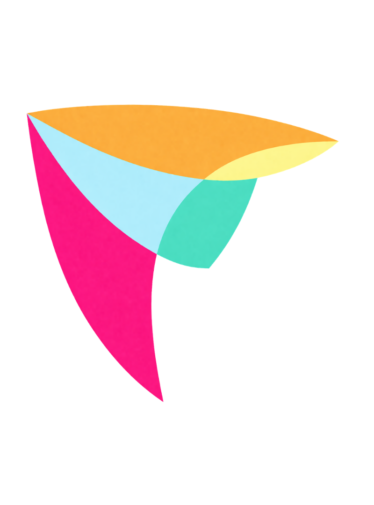

קטלוג תשפ״ז
קטלוג התוכניות החינוכיות
של תעשיידע | תשפ״ז
בתחומי המדע והטכנולוגיה
תעשיידע היא עמותה חינוכית מיסודה של התאחדות התעשיינים בישראל,
הפועלת מאז שנת 1992 לחיבור בין מערכת החינוך לבין התעשייה בתחומי המדע והטכנולוגיה.
לאורך השנים פיתחה והפעילה העמותה תוכניות חינוכיות בבתי ספר ברחבי הארץ, מתוך היכרות עמוקה עם צורכי השטח, עם עבודת הצוותים החינוכיים ועם האתגרים של למידה משמעותית בבית הספר.
בקטלוג תשפ״ז ריכזנו מגוון תוכניות חינוכיות המשלבות תוכן פדגוגי איכותי, התנסות חווייתית ותהליכי למידה מעשיים. התוכניות מזמינות את התלמידות והתלמידים לשאול שאלות, לחקור, לבנות, ליצור, לעבוד יחד ולהציג תוצרים ורעיונות באופן ברור ובטוח.
דרך ההתנסות בתוכניות נחשפים המשתתפים לכלים ולמיומנויות הנדרשים במאה ה-21: חשיבה ביקורתית ויצירתית, פתרון בעיות, עבודת צוות, תקשורת בין-אישית, אוריינות מדעית וטכנולוגית, שימוש מושכל בכלים דיגיטליים, קבלת משוב, שיפור רעיונות והצגה בפני קהל.
מיומנויות אלו משתלבות בתוך הפעילות באופן טבעי, מתוך עשייה, חקר והתנסות ולא כלמידה מנותקת מהעולם האמיתי.
כל תוכנית נבנית מתוך מחשבה על התאמה לגיל, למטרות הלמידה ולמסגרת הבית-ספרית.
ההפעלה מתבצעת על ידי מדריכים מקצועיים, בליווי צוותי התוכן והפדגוגיה של תעשיידע ובאופן המאפשר לבית הספר לשלב את הפעילות כחלק ממענה חינוכי רחב, רלוונטי ומעשי.
תוכניות תעשיידע נמצאות במאגר התוכניות והמענים שאושרו במסלול המכרזי בגפ״ן.
אנו מזמינים אתכם לעיין בקטלוג ולבחור את התוכניות המתאימות לבית הספר שלכם — תוכניות שמחברות בין ידע לעשייה, בין סקרנות להתנסות ובין למידה לחוויות הצלחה.

תעשיידע - מובילים דור אחד קדימה
בחדשנות, סקרנות ויזמות טכנולוגית.